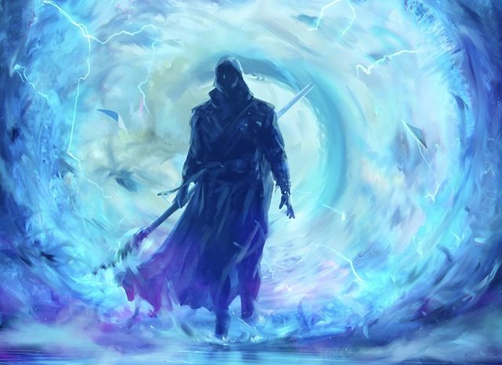

SCP Foundation
Secure, Contain, Protect
The Contractor

The Agent/Contractor is a general term used to refer to personals from "The Company". Refer to The Company page to know more about the organisation.
An Agent's primarily mission is resource collection for the company. The resource consists of "Human", "Super natural entities", "A living powerful _anything_"
An Agent's profession can be summarized as "Slaver".
Agents abilities ranges too much to be accuratly written in one report but general rule is the older an agent is the more powerful it is.
Standard agent Abilities/Equipments are:
1. The Phone/Interface This is the piece of device The Company uses to keep in contact with their Agent. The phone comes with ability for Agent to browse through the Comapny catalog to purchase "Abilities", "Entites(Mind controlled slaves)", "Equipments"
2. Agents possess what is the mangnum opus of The Company know as "The Stamp" it comes in various form and shape, but the end result is same an attempt to mind control an entity, scan the stamped entity's physical, spiritual and metaphysical layer. So they can be Accuratly Cloned and sold to The Company Clients. Direct Contact with Agent or any "Companion"(The stamped entity) of agent should be treated with "Kill on sight" order.
3. The Agent may come with their "Companions". The comanion are the entites that the Agent have purchased from their catalog or have been stamped by themselves.
4. Agents also genrally posses various protections applied on them by their companies defence engines. It comprises of, body, mind, corruption, wild, possesion, information, enviromental, drain, trace, creature, fatality(Yes it provides recovery from conceptual instant death), destiny, stress, polymorph, paradox, addiction and wyldscape defence.
5. An Agent species can be virtually any species that exists on earth texture.
The standard way to contain an agent is to use, a Fait backed weapon(Divine weapons) or "Alien"
The stamp does not affect divine beings despite what is written in their internal catalog.
The Agent is to be killed on sight, If Agent is powerful assitance from teams equiping "Fait" should be deployed.
The motivation for agent have been infered. It can range from desire for "Good life", "Forced conscription", "Being Power hungry", "Wanting love of a fictional waifu".
The Company internal curreny is credit which Agents earn upon capturing "Targets". The Credit given is proportional to how powerful the entity is.
Read about The Company in The Company Page
Once again reminder that this page lists abilities we have observed in the agents we have captured. It may vary way too much. An agent could have spent most of their credits on defence or they could have spent it on purchasing their "Companions", it depends.